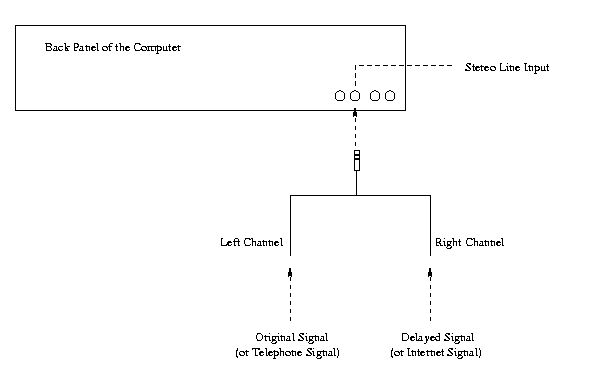

adelay - measure the delay between two audio channels
adelay [-hd] [-e PCMU|PCMA|L16] [-f samplerate] [-p period] [-s skip] [-t time] [-i in] [-o out]
Source is available at http://www.cs.columbia.edu/~hgs/adelay/src/
Currently, only Sun audio files and the Sun audio devices are supported.
The adelay utility is an audio signal delay analyzer. It reads the data from the input device or a file, calculates correlation between the two channels using FFT, and reports the delay between them.
In correlation, we compare two sets of data directly superposed, and with one of them shifted left or right. The relation that holds when two functions, g(t) and h(t), are interchanged is:
Corr(g,h)(t) = Corr(h,g)(-t) The discrete correlation of two sampled functions gk and hk, each periodic with period N, is defined by
Corr(g,h)[j] = Sum [k=0 to N-1](g[j+k] + h[k]) The discrete correlation theorem says that this discrete correlation of two real functions g and h is one member of the discrete Fourier transform pairCorr(g,h)[j] <==> GkHk* We can compute correlation using an FFT as follows: compute the FFT for the two data sets, multiply one resulting transform by the complex conjugate of the other, and compute the inverse transform of the product. The result, say r, will formally be a complex vector of length N with all its imaginary parts zero since the original data sets were both real. The components of r are the values of the correlation at different lags.
When the delay is more then half of the length of the collected sample, the results tend to vary. Normally, more than half of them are correct. Most incorrect results fluctuate near 0 (no delay) as the two set of data are considered unrelated. Specify larger sampling time if results jump between a long delay and 0.
-h Print a short description of the usage. -d Print out decoded data in addition to the correlation when -o is specified. -e PCMU|PCMA|L16 Specify the encoding of the audio input. Currently, delay supports PCMU (U-law), PCMA (A-law) and L16 (Linear 16-bit signed). The default encoding is L16. This option has no effect when reading from file because the file header provides encoding information. -f samplerate Sampling frequency in Hz. The default is 8000 Hz. This option has no effect when reading from file because the file header provides frequency information. -p period Period for checking delay. When reading data from audio input device, the program can check the delay periodically. The default is 60 sec. Use 0 or less to suppress looping (run only once). This option has no effect when reading from file because the program is only run once in that case. -s skip Skip first seconds of data when reading from file. The default is 0. This option has no effect when reading from audio input device. -t time Sampling time in seconds. The default is 2 seconds. The FFT library requires the size of the data set to be power of 2. Therefore, the delay program automatically reads in data of length that is power of 2 and just above the specified length. If the delay is larger than the half of the sampling length, the results tend to vary. Normally, more than half of them are correct. Most incorrect results fluctuate near 0 (no delay) as the two set of data are considered unrelated. Specify larger sampling time if results jump between long time and 0. -i in Read from the given audio file. The file must be a Sun audio (.au) file. By default, the program reads from audio input device. Reading from the audio device is currently only supported for Sun systems. -o out Output the delay correlation pairs to file out. Use "-" for stdout. By default, this program does not output this data. This option has no effect if this program loops for checking delay from audio input device.
This program simply print out the delay between the two channels.
When the -o option is specified, the output has following format:
Lag (msec) Correlation -1024.000000 -1.408000e+03 -1023.875000 -2.560000e+02 -1023.750000 1.220000e+02If, in addition to the -o option, the -d option is also specified, the output is in following format:
Lag (msec) Correlation Left Channel Right Channel -1024.000000 -1.408000e+03 0.000000e+00 0.000000e+00 -1023.875000 -2.560000e+02 0.000000e+00 0.000000e+00 -1023.750000 1.220000e+02 0.000000e+00 0.000000e+00
Reads from a recorded audio file "data.au" and analyze delay:delay -i data.auReads from a recorded audio file "data.au", analyzes delay, and print out the correlation to file "result":delay -i data.au -o resultReads from a recorded audio file "data.au", analyzes delay, print out the correlation along with decoded data to standard output, and observe them with pager:delay -d -i data.au -o - | moreReads from the audio input device with all default values:delayReads from the audio input device, calculates only once:delay -p 0Reads from the audio input device with U-law encoding:delay -e PCMU
The following exit values are returned:
0 The program terminated successfully. >0 An error occurred.
This program can be used to measure one-way internet delay. Split one audio signal into two channels, one transmitted by telephone network and the other by internet. The receiver connect these channels to the audio input of the computer, the first channel to the left and the second to the right. The result from the program is then the one-way internet delay compared to the telephone switch network transmission.

- Project report
- William H. Press, et. al., Numerical Recipes In C -- the Art of Scientific Computing, Cambridge University Press, 1988.
- Audio Format FAQ, Part 1
- Audio Format FAQ, Part 2
Hao Huang, Columbia University
I would like to thank Jonathan Lennox for his help and advice. I would also like to thank Prof. Henning Schulzrinne for giving me this opportunity, for his guidance, and for his kind consideration for my medical condition during this project.
Copyright 1998 by Columbia University; all rights reserved
Permission to use, copy, modify, and distribute this software and its documentation for research and educational purpose and without fee is hereby granted, provided that the above copyright notice appear in all copies and that both that the copyright notice and warranty disclaimer appear in supporting documentation, and that the names of the copyright holders or any of their entities not be used in advertising or publicity pertaining to distribution of the software without specific, written prior permission. Use of this software in whole or in parts for direct commercial advantage requires explicit prior permission.
The copyright holders disclaim all warranties with regard to this software, including all implied warranties of merchantability and fitness. In no event shall the copyright holders be liable for any special, indirect or consequential damages or any damages whatsoever resulting from loss of use, data or profits, whether in an action of contract, negligence or other tortuous action, arising out of or in connection with the use or performance of this software.